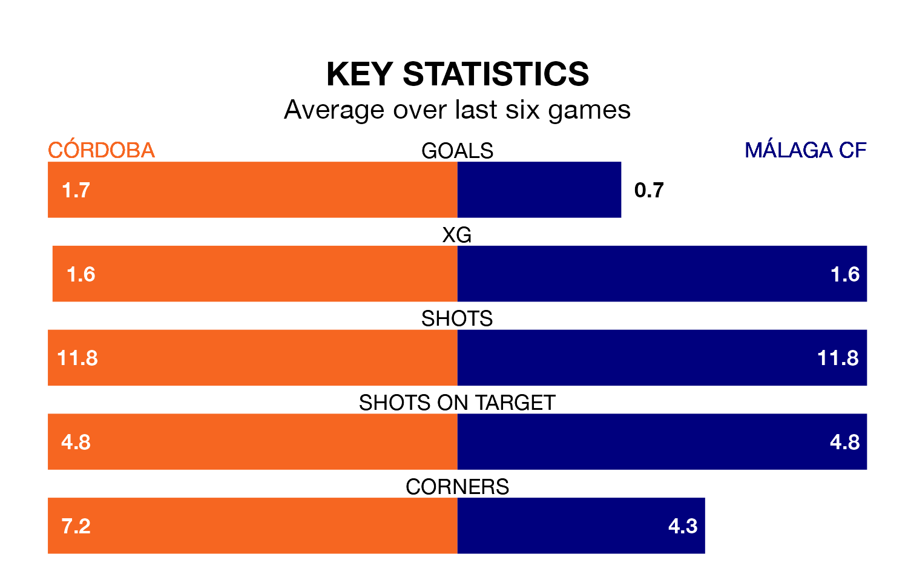

Two of Primera Division RFEF Group 2's top sides face each other at the Estadio Nuevo Arcángel in Sunday's kick-off, when second-placed Córdoba host fourth-placed Málaga CF.
Córdoba have picked up 20 wins and seven draws from 33 games so far this season, and sit five points above the visitors going into the 3pm match.
Málaga, meanwhile, have won 17 and drawn 11, picking up 62 points.
With 60 goals in 33 games so far this season, Córdoba are the league's second-highest scorers with 1.8 goals per game. And they are conceding fewer than average, letting in 28 goals at a rate of 0.8 per game.
Málaga are also above average scorers, with 1.3 goals per game, compared to a league average of 1.1. They have conceded 0.6 goals per game.
In Roberto Fernández Jaén, the visitors have one of the league's most on-form strikers so far this season. He has notched 10 goals in 23 appearances, to sit second in the scoring charts.
The home team's top scorers, with seven goals in 22 games each, are Adilson Mendes Martins and Antonio Manuel Casas Marín.
In the last 10 years, Córdoba and Málaga have played each other on seven occasions. Córdoba won two of them, Málaga three, and they drew twice.
On average, Córdoba scored 1.3 goals and Málaga 1.7 in those matches.
Their last meeting was on November 5, when they played out a 1-1 draw.
Córdoba are in good form in Primera Division RFEF Group 2, with four wins and a draw from their last six games.
With two wins and four draws over that period, Málaga's form is worse – they have taken 10 points from 18, compared to Córdoba's 13.
Córdoba's last match was on Sunday, a 2-0 win against Intercity, with Carlos Albarrán Sanz and José Luis Zalazar Martínez getting the goals for Córdoba.
Málaga drew 0-0 with Real Murcia last time out, also on April 21.
Updated: 07:59 (UTC), 26/04/24